Portfolio
Projects
研究と作品、活動を、そこから生まれた論文・デモ・サイトとあわせてまとめています。

Project BAKEBAKE
妖怪伝承アーカイブと生成AI
- 妖怪の地理
- BAKEBAKE XR Generator
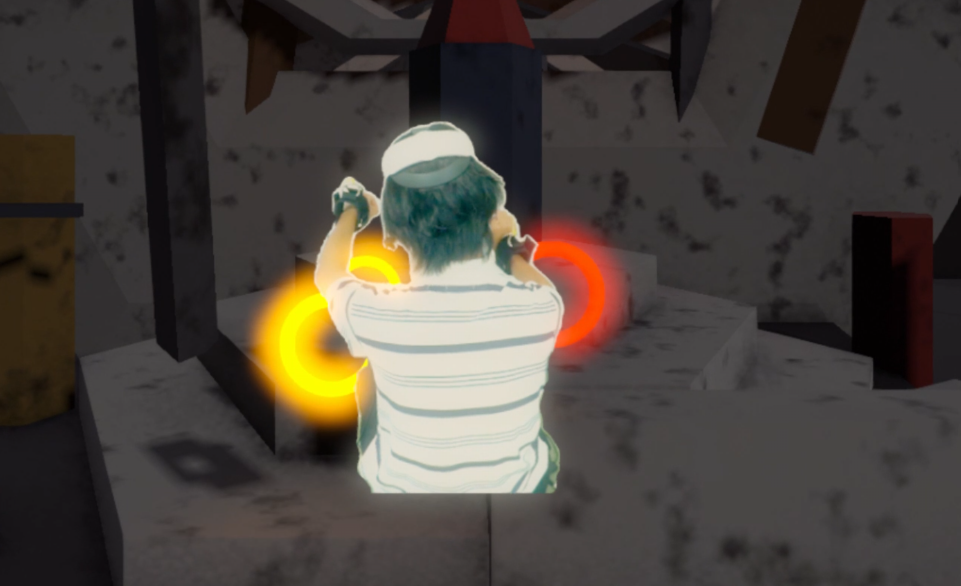
MetaPuppet
自分の体を操り人形のように操作する
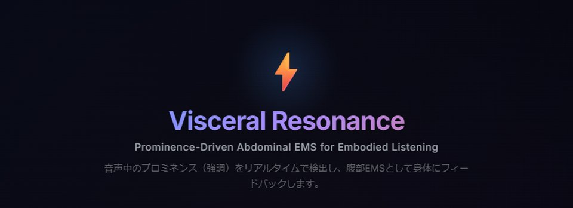
声の強調
話し手が強めた語を見つけ、字幕で見せ、身体で感じられるようにする
- 強調が見える字幕
- Visceral Resonance
- 強調のモデル化
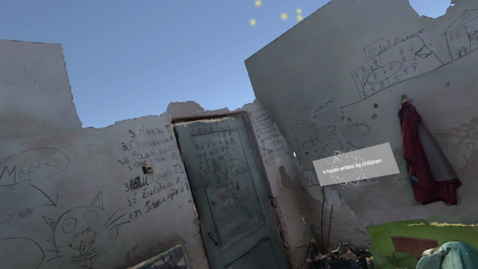
没入型アーカイブと視線
VRアーカイブでの視線を用いた情報提示と鑑賞行動の分析
- Floating Captions
- 持続的な鑑賞
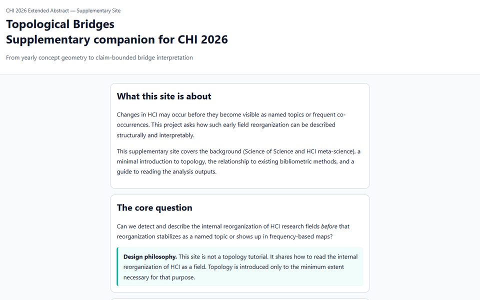
HCIを地図にする
HCIのメタサイエンス：分野の構造と領域どうしの接近を調べる
- WISSpectrum
- Topological Bridges
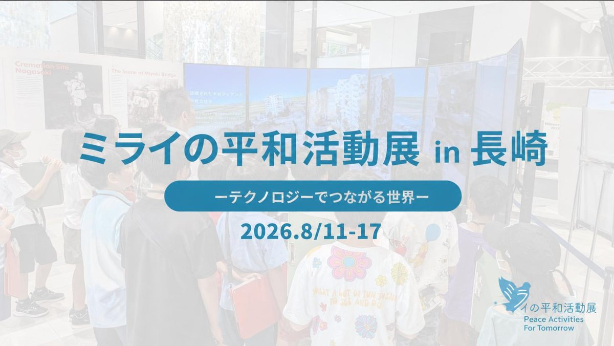
顔モーフィングと歴史理解
長崎の原爆を描いた映像に自分の顔が現れたとき、鑑賞者は何に注意を向けるか
- パイロット研究（ADADA 2025）
- 継続中の追試
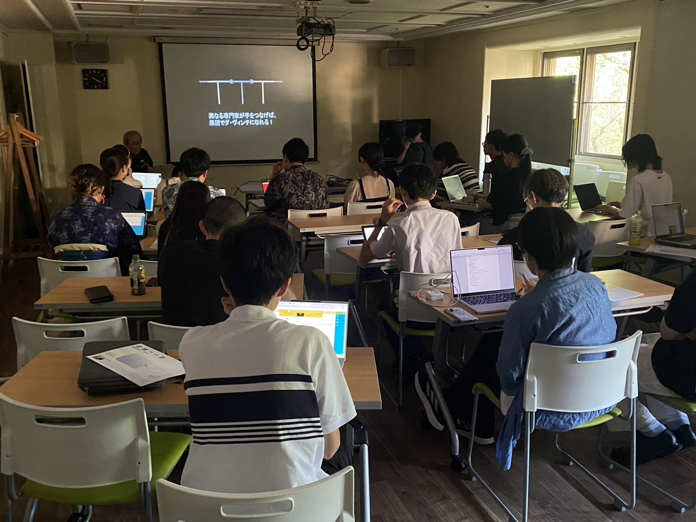
Studemia
学生と大学院生が分野を越えて学ぶコミュニティ
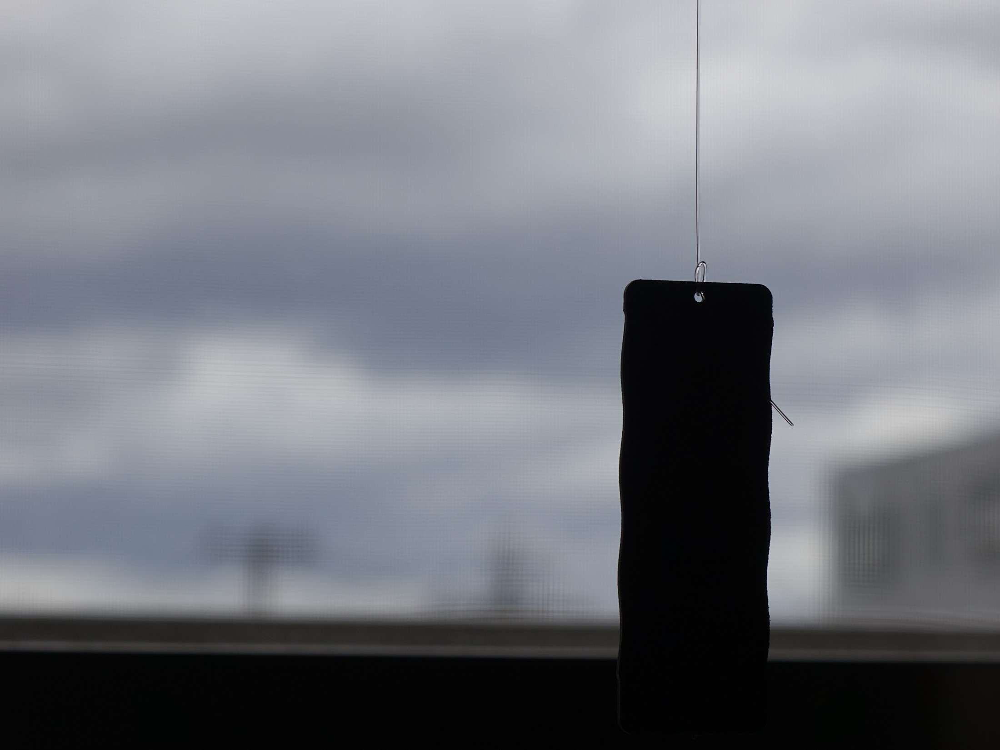
Wind Garden
室内に入ってくる風を感じるためのインスタレーション
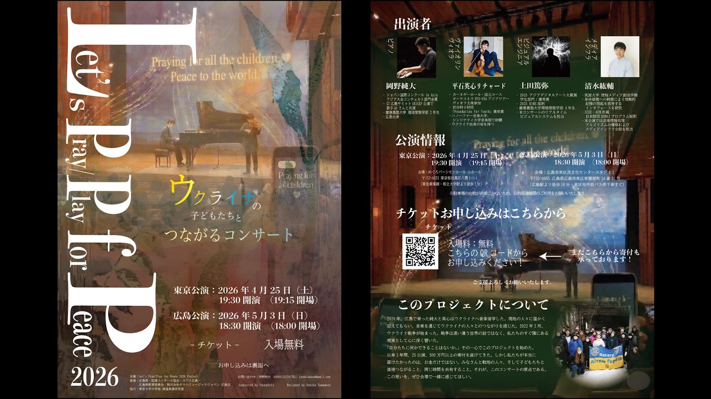
Let's Pray / Play for Peace 2026
観客参加型のリアルタイム映像を使ったチャリティーコンサートの基盤
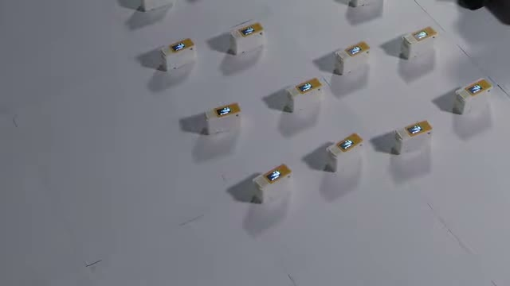
Technetope
来場者を環境の一部として扱う、小型可動スピーカーの群れ
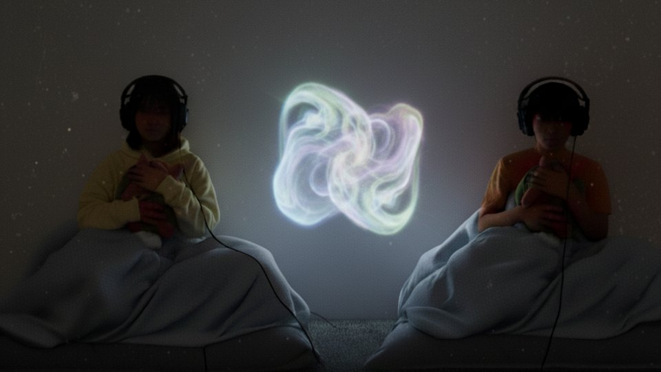
KNOT
二人の心拍のあいだに現れる像
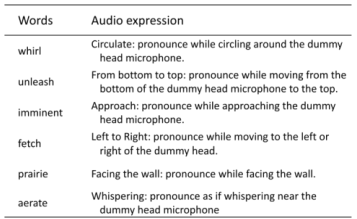
バイノーラル語彙学習
意味を演じるバイノーラル音で英単語を覚える
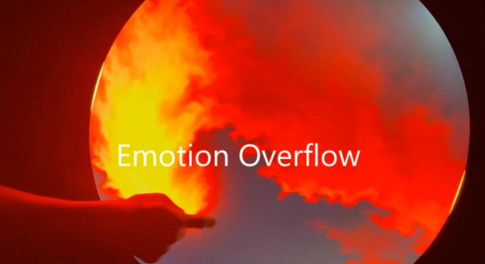
Emotion Overflow
感情を流体で表す

The Music of the Sphere
東京・湯島で5日間開かれたサウンドインスタレーションのシステム開発

GhostDisplay
ユーザーを通り抜ける、動くフォグスクリーン
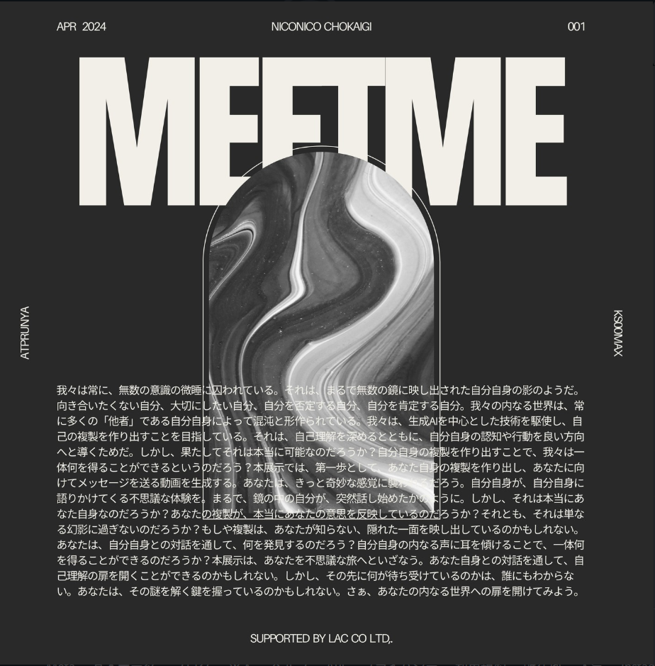
MEETME
自分の姿と声から生まれた分身からビデオメッセージを受け取る
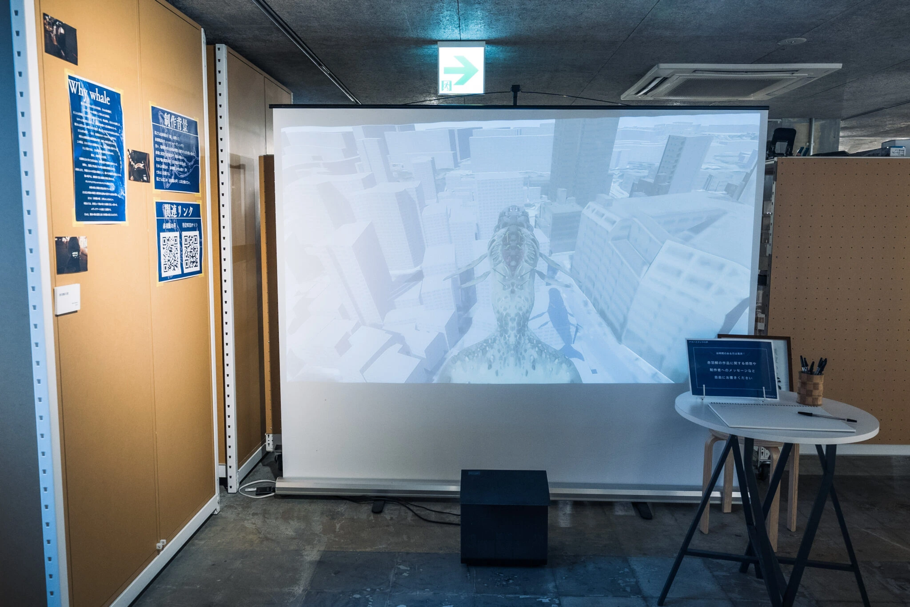
赤羽のクジラの歌
赤羽の環境音を、街にいる架空のクジラの声として聴く
研究テーマ
T1体性感覚刺激インターフェース
T2記憶と再接続する環境
- Emotion Overflow
- BAKEBAKE XR GeneratorProject BAKEBAKE
T3能力を拡張する計算機システム
- バイノーラル語彙学習
- Floating Captions没入型アーカイブと視線
- WISSpectrumHCIを地図にする
- 強調が見える字幕声の強調